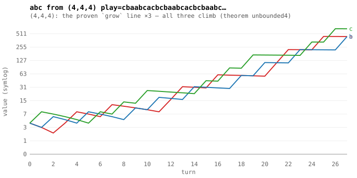
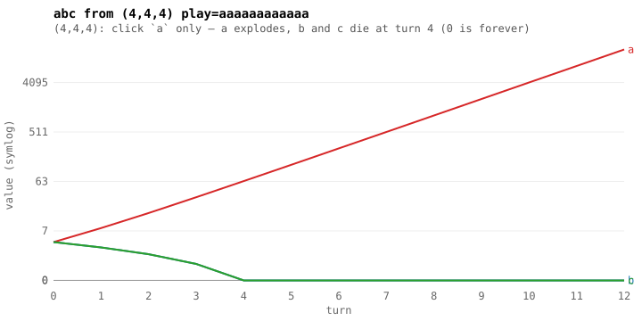
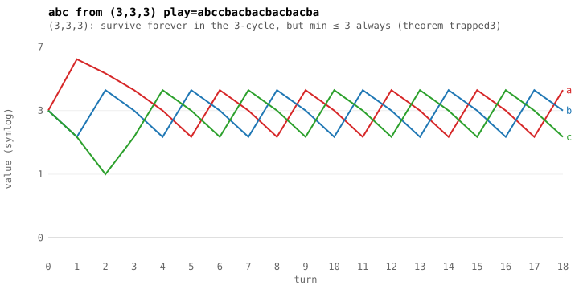
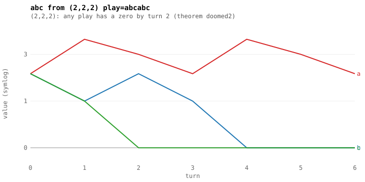
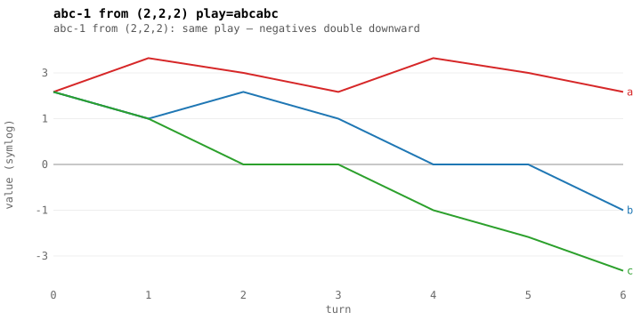
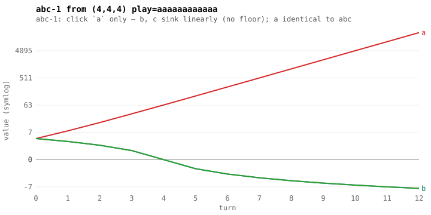
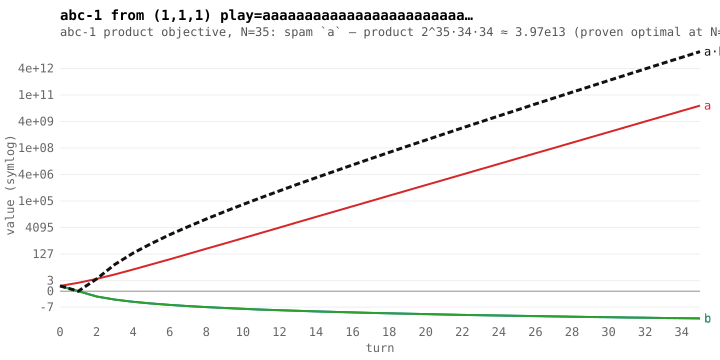
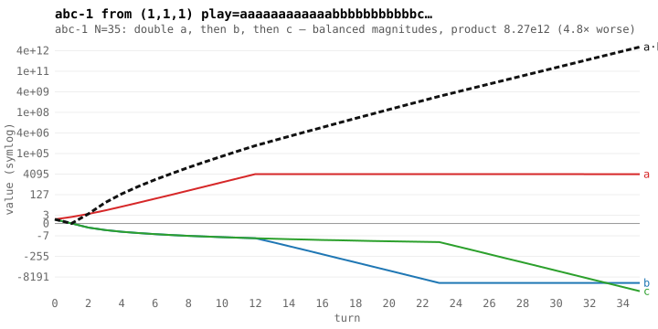
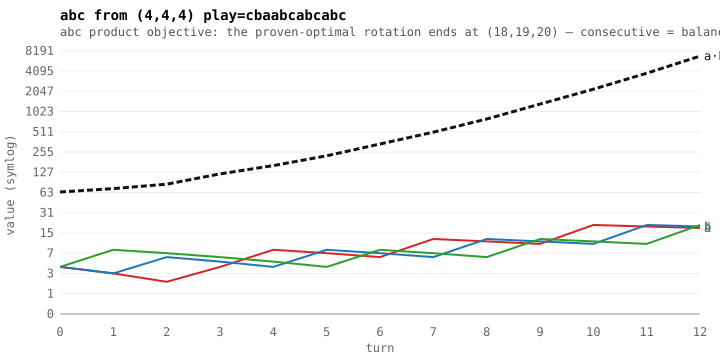

abc / abc-1 — trajectories from the proven step (symlog axis) · demo · README

grow — (4,4,4): the proven `grow` line ×3 — all three climb (theorem unbounded4)
greedy — (4,4,4): click `a` only — a explodes, b and c die at turn 4 (0 is forever)
trapped — (3,3,3): survive forever in the 3-cycle, but min ≤ 3 always (theorem trapped3)
doomed — (2,2,2): any play has a zero by turn 2 (theorem doomed2)
doomed-nosat — abc-1 from (2,2,2): same play — negatives double downward
greedy-nosat — abc-1: click `a` only — b, c sink linearly (no floor); a identical to abc
prod-spam35 — abc-1 product objective, N=35: spam `a` — product 2^35·34·34 ≈ 3.97e13 (proven optimal at N=9; witness at 35)
prod-split35 — abc-1 N=35: double a, then b, then c — balanced magnitudes, product 8.27e12 (4.8× worse)
prod-balanced — abc product objective: the proven-optimal rotation ends at (18,19,20) — consecutive = balanced